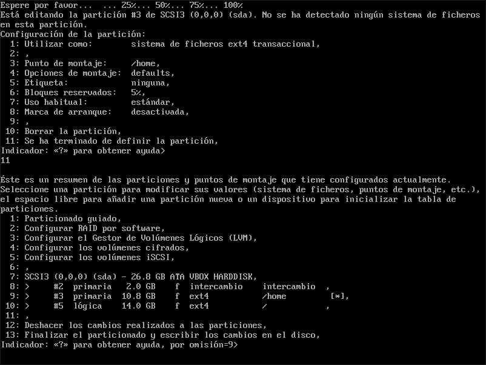
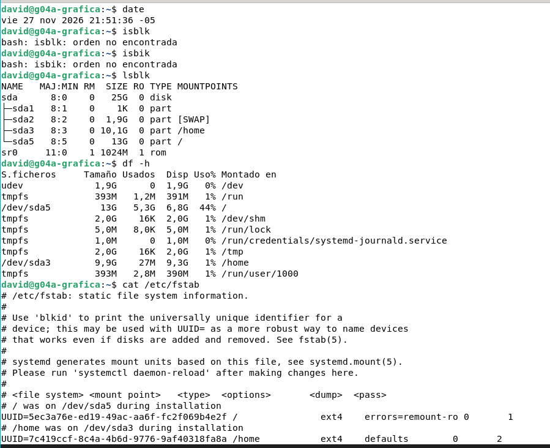
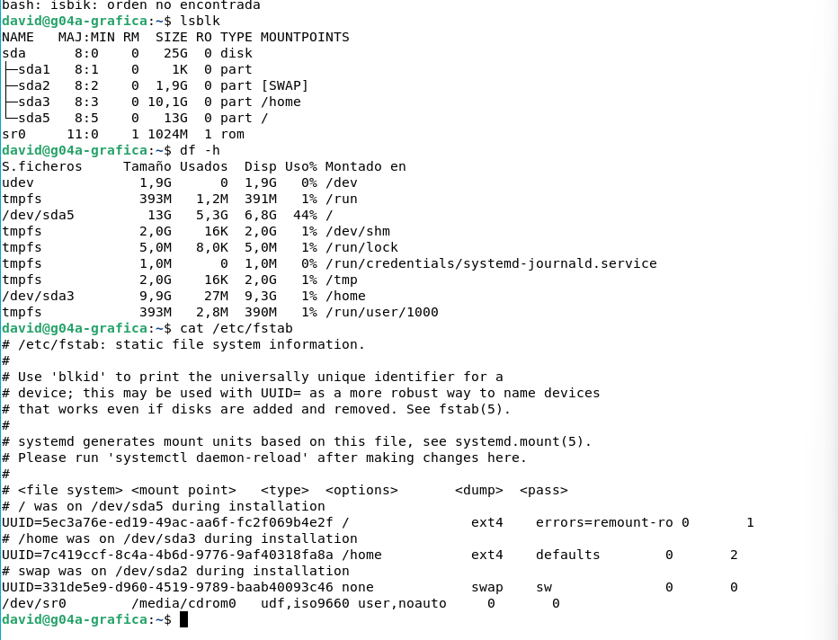
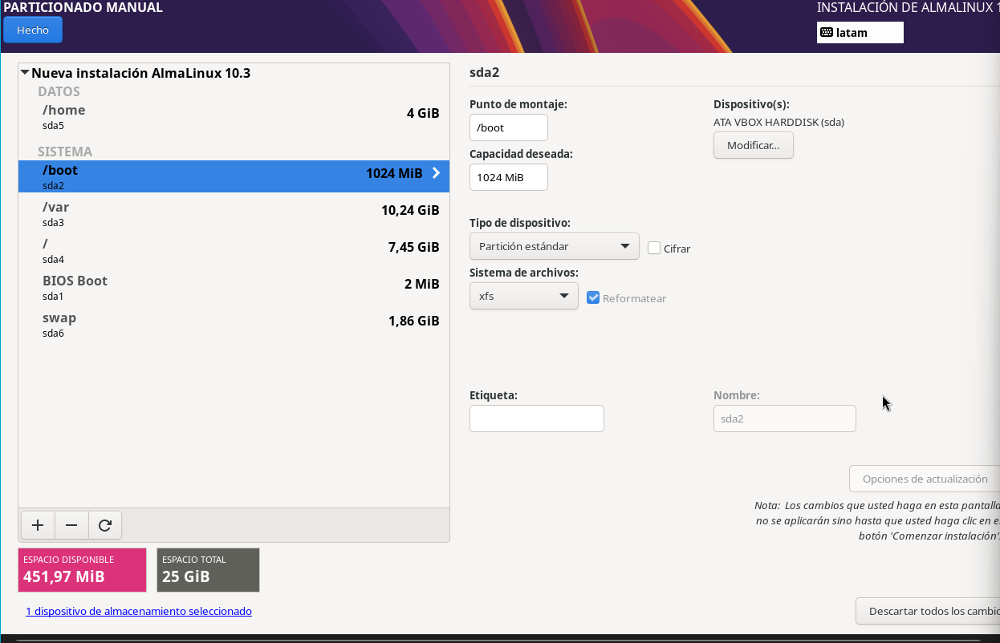
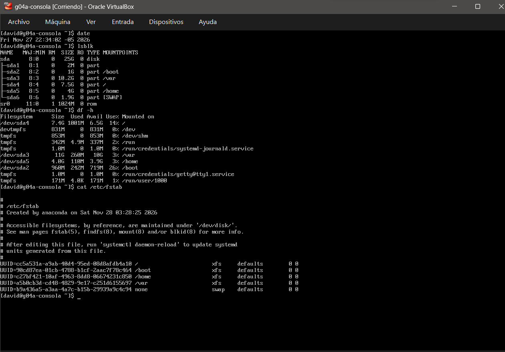
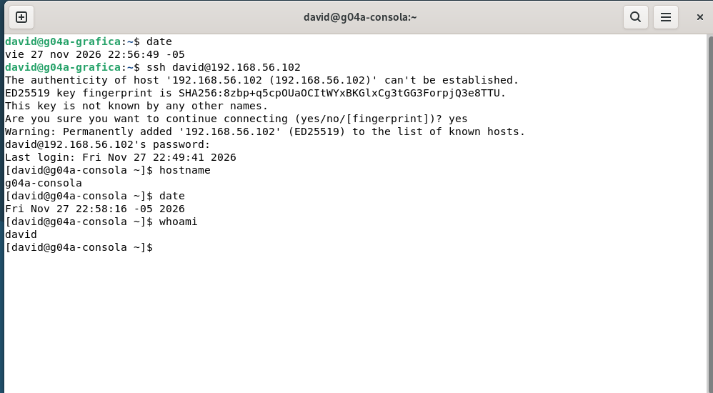

Sprint 1 - Montaje
Proyecto Final de Sistemas Operativos · Grupo 04A · Universidad del Valle
En este sprint nos dedicaremos a la creación de las máquinas virtuales, mostrando los comandos, la conexión de red con sus respectivas capturas.
1. VM gráfica (Debian)




2. VM Consola (AlmaLinux)




3. Red


4. SSH
Esto aun esta incompleto.
5. Capturas

6. Link del video
Esto aun esta incompleto.
7. Lo que hizo cada integrante en este sprint
| Integrante | Qué hizo | Commits |
|---|---|---|
| Isaí | Creó las páginas del sitio y revisó la ficha | 2 |
| Andres | Instaló y configuró las dos VMs, la red, SSH y las instantáneas | 3 |
| Isaí | Instaló las herramientas en la consola, grabó el video y subió las capturas al sitio | 2 |